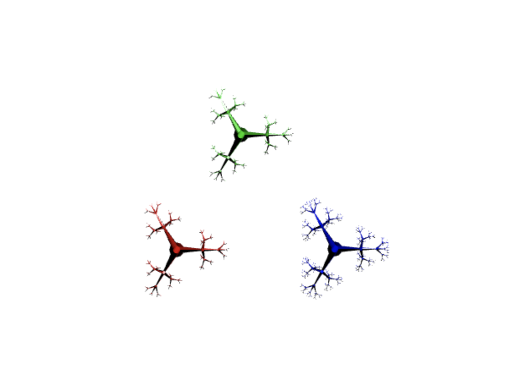
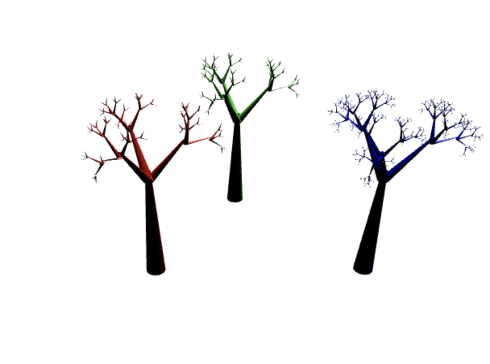

This program adds smooth shading, specular lighting, and object selection via picking to the previous program (2).
There is another option in the toggle render mode cycle: smooth which eliminates the polygon color lines.
Left click on a tree to select it, turning it green and making the glossiness factor 0. Otherwise by default, red trees have glossiness 5, blue trees have glossiness 20.
Other things are the same as the previous assignments: Left click for red tree, Right click for blue tree.
Screenshots:
 